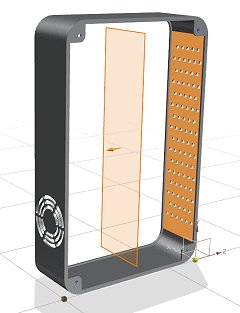
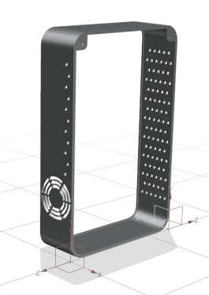
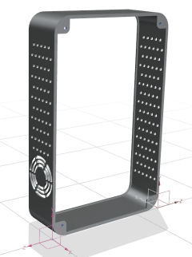

You will mirror one set of hole instances from a pattern feature and a datum coordinate system on one side of the box frame to the opposite side. You will use the Part Navigator to select the instances you want to mirror.
You can complete mirroring hole instances as an optional design challenge.
Show Datum Coordinate System (16).
In the Part Navigator, expand Pattern [Linear].
Press the Shift key and select the following series:
Instance [0] [5] through Instance [0] [15]
Press the Ctrl key and select Datum Coordinate System (16).
Click the middle mouse button.
In the Mirror Plane group, make sure Plane is set to New Plane.
With Specify Plane highlighted, select one of the inside vertical faces, and then the other to create a mirror plane.

In the Settings group, from the CSYS Mirror Method list, select Mirror Y and Z, Derive X.
Click OK.

A subset of eleven instances of the linear pattern feature is mirrored to the opposite side of the box frame. The CSYS is also mirrored using the mirror method you chose.
Optional: Edit the Mirror Feature you just created to add the rest of the ventilation holes to the mirrored pattern feature.
Add the follow groups of pattern instances to complete the mirror feature operation.
Instance [1] [5] through Instance [1] [15]
Instance [2] [5] through Instance [2] [15]
Instance [3] [5] through Instance [3] [15]
Instance [4] [5] through Instance [4] [15]
Instance [5] [6] through Instance [5] [14]

Close the part.